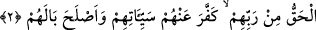
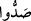

Rahman ve rahim olan Allah’ın adıyla
“İnkâr edenlerin” İslâm’dan ve onun yoluna girmekten yüz çevirenlerin yahut
insanları bundan alıkoyup “Allah yolundan alıkoyanların işlerini” iptal edip silmiş,
onu ortada hiçbir izi kalmayacak şekilde zâyi sayarak “boşa çıkarmıştır.”
Yoksa daha önce böyle değilken sonradan iptal edilmiş değildir. Bilakis Allah
başlangıçtan itibaren kâfirlerin amellerinin zâyi olduğuna hüküm vermiştir. Zira
kâfirlerin yapmış oldukları akraba ziyâreti, misâfire ikram, esirleri serbest bırakma ve
diğer iyi ve güzel işler, bütün bunlar, îmanla beraber olmadığı için kökünden yok
sayılmıştır. Yine Allah Teâlâ kâfirlerin Peygamberimiz (s.a.)’e yapmış oldukları
hileleri, kurmuş oldukları tuzakları ve onun yoluna engel olmayı Peygamberi’ne yardım
ederek ve kendi dinini diğer bütün dinlere galip ve hükümran kılarak iptal etmiştir. Bu
mânâ Allah Teâlâ’nın ilerideki “İnkâr edenlere gelince, onların hakkı yıkımdır.
Allah onların yaptıklarını boşa çıkarmıştır” (Muhammed, 8) kavline ve “(Savaşta)
inkâr edenlerle karşılaştığınız zaman boyunlarını vurun” (Muhammed, 4) kavline
daha muvâfıktır.
Âyetteki (saddû) kelimesi (sadde sudûden) kökünden gelmektedir. Bu
(sadde sudûden) kökünden gelmektedir. Bu
ifâde önceki ifâdeyi tekid ve tefsir gibidir. Yahut (saddehu sadden) kökünden
gelmektedir ki bunlar Bedir günü, Peygamber ve müminlere düşmanlık maksadıyla
varlıklı ve zengin müşriklerin müşrik ordusunu yedirip doyuranlarıdır. Bu durumda 
(saddû) kelimesi bir önceki ifâdede “inkâr edenler” şeklindeki genel hükmü tahsis etmiş
olur.
Zâhir olan ise bu ifâdenin, inkâr eden ve Allah’ın yolundan men eden herkes hakkında
genel bir hüküm olduğudur.
2. İman edip yararlı işler yapanların, Rableri tarafından hak olarak Muhammed’e
indirilene inananların günahlarını Allah örtmüş ve hallerini düzeltmiştir.
Gerek muhâcirlerden, ehl-i kitaptan ve diğerlerinden bütün ilâhî kitaplara “inanıp iyi
işler yapanların” iyi iş yapan herkesin “Rableri tarafından” ve özellikle
“Muhammed’e indirilen gerçeğe inananların da” îman etmeleri ve iyi iş yapmaları
sebebiyle “günâhlarını örtmüş ve” onları teyid edip muvaffak kılarak onların hem dinî
hem de dünyevî “hallerini düzeltmiştir.”
Burada önceki hükme dâhil olduğu halde Muhammed (s.a.)’e indirilen Kur’ân’a
îmanın özellikle zikredilmesi Kur’ân’ın şânını tâzim içindir. Kadr suresi 4. âyette
Cebrâil (a.s.) demek olan “Ruh” kelimesinin melâike üzerine atfedilmesi de bu
kabildendir. Yine ayrıca kendilerine îman etmenin gerekli olduğu unsurlar arasında